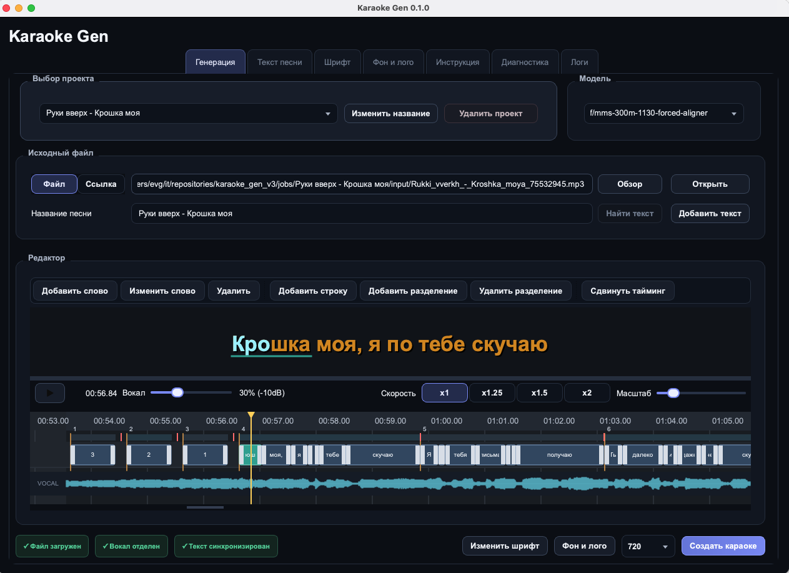

Изготовление караоке на заказ / Евгений
Сделаю караоке
для вашей
песни.
Вы присылаете песню — я делаю готовое караоке-видео MP4 с музыкой и словами на экране. Голос исполнителя убираю или оставляю тихим. Включаете видео и поёте сами.
01 / Послушать и посмотреть
Меньше слов.
Вот как это звучит.
Два готовых примера с разным уровнем вокала. Откройте видео и оцените звук и оформление текста.
Вокальная дорожка выключена
Когда хотите петь самостоятельно.
Тихий голос для опоры
Чтобы легче держать мелодию.
Проценты — настройка вокальной дорожки. Результат удаления голоса зависит от исходной записи: отдельные следы вокала могут оставаться.
Частый заказ / Для особого повода
Песня-поздравление
с вашим текстом.
Переделали знакомую песню для поздравления на свадьбу, юбилей или день рождения? Сделаю караоке с вашими словами, чтобы вы могли исполнить её под музыку.
Пришлите оригинальную песню и готовый переделанный текст. Обсудим, как уложить слова в музыку и оформить видео.
Для сложных заказов цену согласуем отдельно — до начала работы.
Обсудить песню-поздравление02 / Всё по делу
От названия песни
до готового видео.
Меня зовут Евгений. Я делаю караоке на заказ и обсуждаю каждую песню с вами напрямую.
Для клуба, выступления, урока вокала или домашнего вечера — начнём с нужной версии трека.
- 01
Пришлите песню
Название, исполнителя или ссылку на точную версию. Для существующей песни могу найти материалы сам; для авторской понадобятся аудио и текст.
- 02
Выберем, как она будет выглядеть
Клип или картинка на фоне, уровень вокала, оформление и параметры видео. До начала согласуем возможность выполнения, цену, срок и оплату.
- 03
Получите MP4 и попробуйте спеть
Отправлю файл через Яндекс Диск. Правки текста, уровня вокала и фона включены — обсудим, что нужно поправить.
За кадром
Так я работаю над вашим караоке
В программе настраиваю текст, его появление под музыку, вокал и оформление видео.

03 / Стоимость
Одна песня.
Или целый сет.
400 ₽ за одну песню.
Если нужен список — есть пакеты.
В каждом варианте: караоке-видео MP4, выбранный фон и уровень вокала, правки текста, вокала и фона.
| Видео | За песню | Всего |
|---|---|---|
| 1 | 400 ₽ | 400 ₽ |
| 5 | 370 ₽ | 1 850 ₽ |
| 10 | 350 ₽ | 3 500 ₽ |
| 20 | 320 ₽ | 6 400 ₽ |
| 50 | 290 ₽ | 14 500 ₽ |
Состав и порядок работы с пакетом согласуем по вашему списку песен. Сложные заказы, в том числе песни-поздравления, требующие дополнительной работы, оцениваются отдельно.
Пара деталей
перед стартом.
Если песни нет в караоке-каталогах?
Для этого и можно заказать отдельное видео. Пришлите нужную запись — проверю, можно ли сделать из неё караоке с подходящим качеством.
Подойдёт для нашего караоке-клуба?
Результат — видео MP4. Возможность воспроизведения сторонних файлов зависит от вашей системы. Посмотрите пример на своём оборудовании и сообщите требования к видео до заказа.
Когда будет готово и как оплатить?
Срок и способ оплаты согласуем в переписке после того, как посмотрю песню и объём заказа.
Можно ли изменить фон или текст?
Да. Правки текста, фона и уровня вокала включены. Если нужна другая версия песни или несколько самостоятельных вариантов, обсудим их отдельно.
Можно караоке с переделанным текстом для свадьбы?
Да. Пришлите исходную песню и готовый текст поздравления — сделаю караоке с вашими словами. Если нужно дополнительно подгонять текст под музыку или выполнять другую сложную работу, стоимость согласуем отдельно до начала заказа.
Начнём с одной песни
Что хотите спеть?
Пришлите название и исполнителя.
А если важна конкретная версия — ссылку на неё.